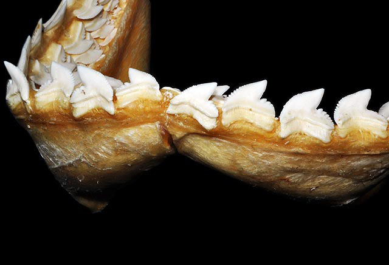
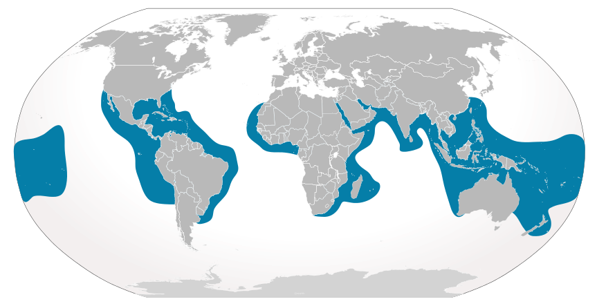
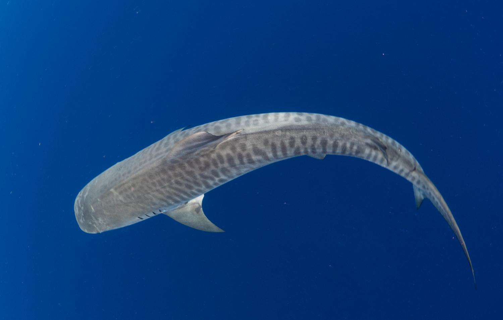
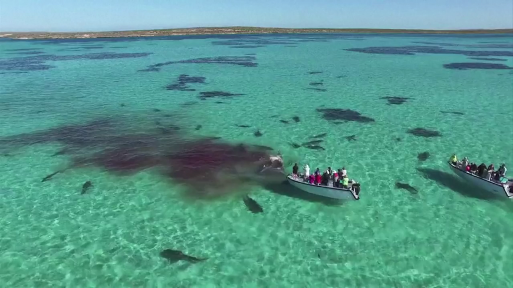

Tiger Shark

The tiger shark (Galeocerdo cuvier) is a species of requiem shark and the only extant member of the genus Galeocerdo. It is a large macropredator, capable of attaining a length over 5 m (16 ft 5 in). Populations are found in many tropical and temperate waters, especially around central Pacific islands. Its name derives from the dark stripes down its body, which resemble a tiger's pattern, but fade as the shark matures.
The tiger shark is a solitary, mostly nocturnal hunter. It is notable for having the widest food spectrum of all sharks, with a range of prey that includes crustaceans, fish, seals, birds, squid, turtles, sea snakes, dolphins, and even other smaller sharks. It also has a reputation as a "garbage eater", consuming a variety of inedible, man-made objects that linger in its stomach. Though apex predators, tiger sharks are sometimes taken by groups of killer whales. It is considered a near threatened species due to finning and fishing by humans.
The tiger shark is second only to the great white in recorded fatal attacks on humans.
Taxonomy
The shark was first described by Peron and Lesueur in 1822, and was given the name Squalus cuvier. Müller and Henle in 1837 renamed it Galeocerdo tigrinus. The genus, Galeocerdo, is derived from the Greek galeos, which means shark, and kerdo, the word for fox. It is often colloquially called the man-eater shark.
The tiger shark is a member of the order Carcharhiniformes, the most species-rich order of sharks, with more than 270 species also including the small catsharks and hammerhead sharks. Members of this order are characterized by the presence of a nictitating membrane over the eyes, two dorsal fins, an anal fin, and five gill slits. It is the largest member of the Carcharhinidae family, commonly referred to as requiem sharks. This family consists of mostly slender but powerful mid- to large-sized sharks and includes some other well-known sharks, such as the blue shark (Prionace glauca), lemon shark (Negaprion brevirostris), and bull shark (Carcharhinus leucas).
Description
The tiger shark commonly attains a length of 3.25–4.25 m (10 ft 8 in–13 ft 11 in) and weighs around 385–635 kg (849–1,400 lb). It is dimorphic, with exceptionally large females reportedly measuring over 5 m (16 ft 5 in), and the largest males 4 m (13 ft 1 in). Weights of particularly large female tiger sharks can exceed 900 kg (2,000 lb). One pregnant female caught off Australia reportedly measured 5.5 m (18 ft 1 in) long and weighed 1,524 kg (3,360 lb). Even larger unconfirmed catches have been claimed. Some papers have accepted a record of an exceptional 7.4 m (24 ft 3 in) length for a tiger shark, but since this is far larger than any scientifically observed specimen, verification would be needed.
Among the largest extant sharks, the tiger shark ranks in average size only behind the whale shark (Rhincodon typus), the basking shark (Cetorhinus maximus), and the great white shark (Carcharodon carcharias). Some other species such as megamouth sharks (Megachasma pelagios), Pacific sleeper sharks (Somniosus pacificus), Greenland sharks (Somniosus microcephalus), and bluntnose sixgill sharks (Hexanchus griseus) broadly overlap in size with the tiger shark, but as these species are comparatively poorly studied, whether their typical mature size matches that of the tiger shark is unclear. The great hammerhead (Sphyrna mokarran), a member of the same taxonomic order as the tiger shark, has a similar or even greater average body length, but is lighter and less bulky, with a maximum known weight of 580 kg (1,280 lb).
Tiger shark teeth are unique with very sharp, pronounced serrations and an unmistakable sideways-pointing tip. Such dentition has developed to slice through flesh, bone, and other tough substances such as turtle shells. Like most sharks, its teeth are continually replaced by rows of new teeth throughout the shark's life. Relative to the shark's size, tiger shark teeth are considerably shorter than those of a great white shark, but they are nearly as broad as the root as the great white's teeth and are arguably better suited to slicing through hard-surfaced prey.
A tiger shark generally has long fins to provide lift as the shark maneuvers through water, while the long upper tail provides bursts of speed. The tiger shark normally swims using small body movements. Its high back and dorsal fin act as a pivot, allowing it to spin quickly on its axis, though the shark's dorsal fins are distinctively close to its tail.
Skin
The skin of a tiger shark can typically range from blue to light green with a white or light-yellow underbelly. The advantage of this is that when it is hunting for its prey, when prey looks at the shark from above, the shark will be camouflaged, since the water below is darker. And when prey is below the shark and looks up, of course because of the sun, it is lighter so that the light underbelly will also camouflage the shark. This is known as countershading. Dark spots and stripes are most visible in young sharks and fade as the shark matures. Its head is somewhat wedge-shaped, which makes it easy to turn quickly to one side. They have small pits on the snout which hold electroreceptors called the ampullae of Lorenzini, which enable them to detect electric fields, including the weak electrical impulses generated by prey, which helps them to hunt. Tiger sharks also have a sensory organ called a lateral line which extends on their flanks down most of the length of their sides. The primary role of this structure is to detect minute vibrations in the water. These adaptations allow the tiger shark to hunt in darkness and detect hidden prey.
Vision
Sharks do not have moveable upper or lower eyelids, but the tiger shark—among other sharks—has a nictitating membrane, a clear eyelid that can cover the eye. A reflective layer behind the tiger shark's retina, called the tapetum lucidum, allows light-sensing cells a second chance to capture photons of visible light. This enhances vision in low-light conditions.
Distribution and Habitat
The tiger shark is often found close to the coast, mainly in tropical and subtropical waters throughout the world. Its behavior is primarily nomadic, but is guided by warmer currents, and it stays closer to the equator throughout the colder months. It tends to stay in deep waters that line reefs, but it does move into channels to pursue prey in shallower waters. In the western Pacific Ocean, the shark has been found as far north as Japan and as far south as New Zealand. It has also been recorded in the Mediterranean, but so far only on two occasions, firstly off Spain and then off Sicily.
Tiger sharks can be seen in the Gulf of Mexico, North American beaches, and parts of South America. It is also commonly observed in the Caribbean Sea. Other locations where tiger sharks are seen include off Africa, China, India, Australia, and Indonesia.
Certain tiger sharks have been recorded at depths just shy of 900 m (3,000 ft), but some sources claim they move into shallow water normally thought to be too shallow for a species of its size. A recent study showed the average tiger shark would be recorded at 350 m (1,100 ft), making tiger sharks uncommonly seen in shallow water. However, tiger sharks in Hawaii have been observed in depths as shallow as 3.05 m (10.0 ft) and regularly observed in coastal waters at depths of 6 to 12 m (20 to 40 ft).
Feeding
The tiger shark is an apex predator and has a reputation for eating almost anything. These predators swim close inland to eat at night, and during the day swim out into deeper waters. Young tiger sharks are found to feed largely on small fish, as well as various small jellyfish, and mollusks including cephalopods. Around the time they attain 2.3 m (7.5 ft), or near sexual maturity, their selection expands considerably, and much larger animals become regular prey. Numerous fish, crustaceans, sea birds, sea snakes, marine mammals (e.g. bottlenose dolphins (Tursiops), common dolphins (Delphinus), spotted dolphins (Stenella), dugongs (Dugong dugon), seals and sea lions, and sea turtles (including the three largest species: the leatherback (Dermochelys coriacea), the loggerhead (Caretta caretta) and the green sea turtles (Chelonia mydas),) are regularly eaten by adult tiger sharks. In fact, adult sea turtles have been found in up to 20.8% of studied tiger shark stomachs, indicating somewhat of a dietary preference for sea turtles where they are commonly encountered. They also eat other sharks (including adult sandbar sharks (Carcharhinus plumbeus)), as well as rays, and sometimes even other tiger sharks.
Due to high risk of predation, dolphins often avoid regions inhabited by tiger sharks. Injured or ailing whales may also be attacked and eaten. A group was documented killing an ailing humpback whale (Megaptera novaeangliae) in 2006 near Hawaii. A scavenger, the tiger shark will feed on dead whales, and has been documented doing so alongside great white sharks.
Evidence of dugong predation was identified in one study that found dugong tissue in 15 of 85 tiger sharks caught off the Australian coast. Additionally, examination of adult dugongs has shown scars from failed shark attacks. To minimize attacks, dugong microhabitats shift similarly to those of known tiger shark prey when the sharks are abundant.
The broad, heavily calcified jaws and nearly terminal mouth, combined with robust, serrated teeth, enable the tiger shark to take on these large prey. In addition, excellent eyesight and acute sense of smell enable it to react to faint traces of blood and follow them to the source. The ability to pick up low-frequency pressure waves enables the shark to advance towards an animal with confidence, even in murky water. The shark circles its prey and studies it by prodding it with its snout. When attacking, the shark often eats its prey whole, although larger prey are often eaten in gradual large bites and finished over time.
Notably, terrestrial mammals, including horses (Equus ferus caballus), goats (Capra aegagrus hircus), sheep (Ovis aries), dogs (Canis lupus familiaris), cats (Felis catus), and brown rats (Rattus norvegicus), are fairly common in the stomach contents of tiger sharks around the coasts of Hawaii. In one case, remains of two flying foxes were found in the stomach of this shark. Because of its aggressive and indiscriminate feeding style, it often mistakenly eats inedible objects, such as automobile license plates, oil cans, tires, and baseballs.
Swimming Efficiency and Stealth
All tiger sharks generally swim slowly, which, combined with cryptic coloration, may make them difficult for prey to detect in some habitats. They are especially well camouflaged against dark backgrounds. Despite their sluggish appearance, tiger sharks are one of the strongest swimmers of the carcharhinid sharks. Once the shark has come close, a speed burst allows it to reach the intended prey before it can escape.
Reproduction
Males reach sexual maturity at 2.3 to 2.9 m (7.5 to 9.5 ft) and females at 2.5 to 3.5 m (8.2 to 11.5 ft). Typical weight of relatively young sexually mature specimens, which often locally comprise the majority of tiger sharks encountered per game-fishing and scientific studies, is around 80 to 130 kg (180 to 290 lb). Females mate once every three years. They breed by internal fertilization. The male inserts one of his claspers into the female's genital opening (cloaca), acting as a guide for the sperm. The male uses his teeth to hold the female still during the procedure, often causing the female considerable discomfort. Mating in the Northern Hemisphere generally takes place between March and May, with birth between April and June the following year. In the Southern Hemisphere, mating takes place in November, December, or early January. The tiger shark is the only species in its family that is ovoviviparous; its eggs hatch internally and the young are born live when fully developed.
The young develop inside the mother's body up to 16 months. Litters range from 10 to 80 pups. A newborn is generally 51 to 76 cm (20 to 30 in) long. How long tiger sharks live is unknown, but they can live longer than 12 years.
Conservation
The tiger shark is captured and killed for its fins, flesh, and liver. It is caught regularly in target and nontarget fisheries. Several populations have declined where they have been heavily fished. Continued demand for fins may result in further declines in the future. They are considered a near threatened species due to excessive finning and fishing by humans according to International Union for Conservation of Nature.
While shark fin has very few nutrients, shark liver has a high concentration of vitamin A, which is used in the production of vitamin oils. In addition, the tiger shark is captured and killed for its distinct skin, as well as by big-game fishers.
In 2010, Greenpeace International added the tiger shark to its seafood red list, which is a list of fish commonly sold around the world, and which have a very high risk of being sourced from unsustainable fisheries.
Relationship with Humans

Although sharks rarely bite humans, the tiger shark is reported to be responsible for a large share of fatal shark-bite incidents, and is regarded as one of the most dangerous shark species. They often visit shallow reefs, harbors, and canals, creating the potential for encounter with humans. The tiger shark also dwells in river mouths and other runoff-rich water. While the tiger shark is considered to be one of the sharks most dangerous to humans, its bite rate is low. It is second on the list of number of recorded bites on humans, with the great white shark being first. Typically, three to four shark bites occur per year in Hawaii, but they are rarely fatal; one notable survivor of such an attack is surfing champion Bethany Hamilton, who lost her left arm at age 13 to a tiger shark in 2003. This bite rate is very low, considering thousands of people swim, surf, and dive in Hawaiian waters every day. Human interactions with tiger sharks in Hawaiian waters have been shown to increase between September and November, when tiger shark females are believed to migrate to the islands to give birth.
Between 1959 and 2000, 4,668 tiger sharks were culled in an effort to protect the tourism industry. Despite damaging the shark population, these efforts were shown to be ineffective in decreasing the number of interactions between humans and tiger sharks. Feeding sharks in Hawaii (except for traditional Hawaiian cultural or religious practices) is illegal, and interaction with them, such as cage diving, is discouraged. South African shark behaviorist and shark diver Mark Addison demonstrated divers could interact and dive with them outside of a shark cage in a 2007 Discovery Channel special, and underwater photographer Fiona Ayerst swam with them in the Bahamas. At "Tiger Beach" off Grand Bahama, uncaged diving with - and even the handling of - female tiger sharks has become a routine occurrence.
Mythology
The tiger shark is considered to be sacred na ʻaumakua (ancestor spirits) by some native Hawaiians, who think their eyeballs have special powers of visual perception. This aligns with the generally known facts about sharks and their highly developed senses.